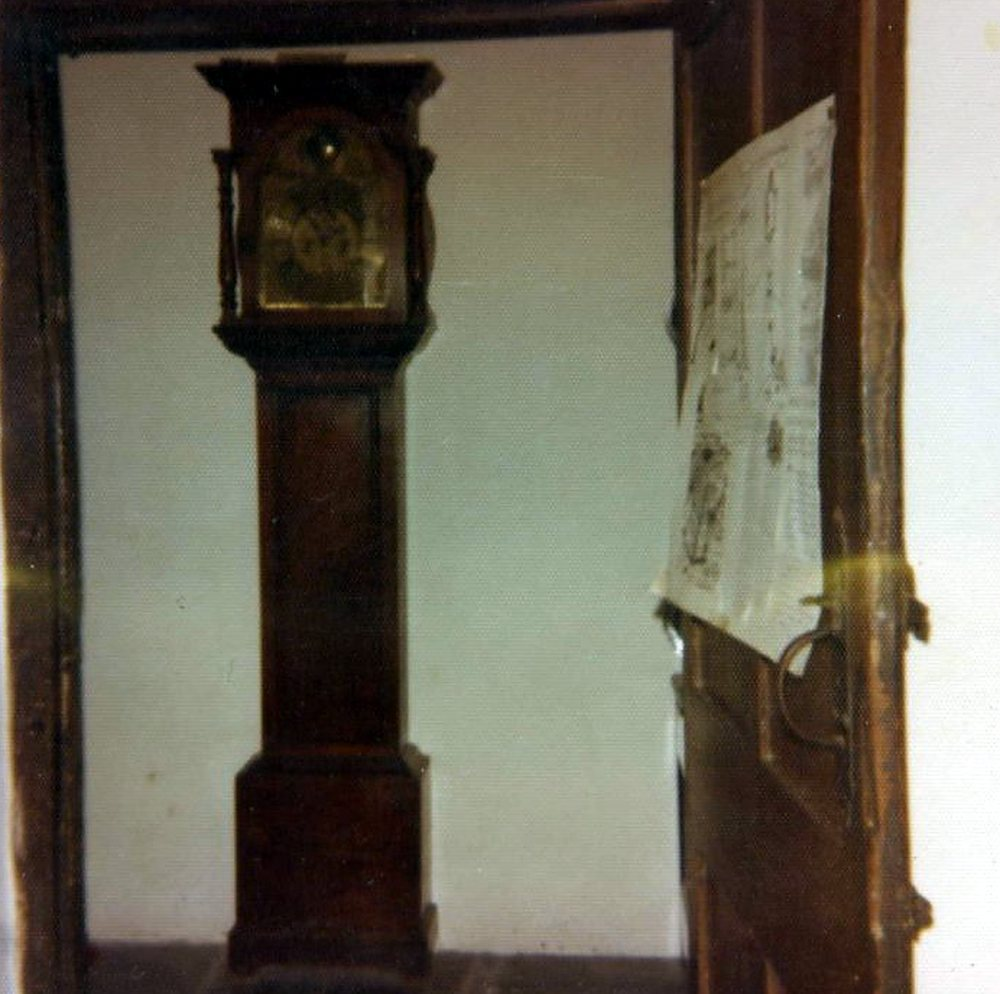

John Williams (died 1950s), father of Nancy
In Mary (Nancy) Williams’s words: “In the year 1908 my grandfather died and my father took over the farm.” Her father, also John Williams, farmed through two wars. In 1944, when age made the work hard to manage to the satisfaction of the War Agricultural Executive Committee, his son-in-law Frederick Buckler gave up his job to run the farm as manager. He was still alive and “very ill” in the early 1950s. The date of his death is SOURCE PENDING.
February 1916 — A yearly tenancy of “the whole of the farm”
- Record:
EV-0014 (Legal Wiki, Evidence Register)
“the whole of the farm”
What the record shows. As recited in the 1987 Court of Appeal judgment, the Marquis of Bute granted John Williams a yearly agricultural tenancy of the farm in February 1916.
What it does not show. The 1916 document and any plan are not yet held.
May 1939 — The 1939 agreement with Western Ground Rents
- Record:
EV-0023 (Legal Wiki, Evidence Register)
What the record shows. An agreement of May 1939 between Western Ground Rents and John Williams, with a plan, survives at Glamorgan Archives (DBDT123/7). Its typed terms show a monthly letting of meadow or pasture at 8s, and the plan shows the eastern fields (Parcel B) only, highlighted.
What it does not show. Page 1 is not held, so the full description of the land is not seen.


The longcase clock at Tŷ Mawr, from the farm’s own album (Part 1, no. 103). Source: Wayback Vault, album image.